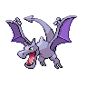

Aerodactyl appears on 160 of 1660 Pokémon Champions VGC tournament teams in the backtwo archive (10% usage, Reg M-A and Reg M-B). The most common item is Focus Sash (92% of Aerodactyl sets) and the most common ability is Unnerve. Its most frequent teammate is Garchomp (60% of its teams).
Open Aerodactyl in the full app →| Team | Player | Event | Result | Reg | Date |
|---|---|---|---|---|---|
| vdmd8olfjy68698's PJCS 2026 Runner Up Tean (Seniors) | vdmd8olfjy68698 | PJCS 2026 | Runner Up (Seniors) | M-A | 11 Jun 2026 |
| hiyu000000's PJCS 2026 Top 4 Team (Seniors) | hiyu000000 | PJCS 2026 | Top 4 (Seniors) | M-A | 7 Jun 2026 |
| Muscle's PJCS 2026 Top 64 Team | Kentaro Matsumoto | PJCS 2026 | Top 64 | M-A | 12 Jun 2026 |
| sasami_poke8036's PJCS 2026 Top 64 Team (Seniors) | sasami_poke8036 | PJCS 2026 | Top 64 (Seniors) | M-A | 10 Jun 2026 |
| Alejandro Montero's VR June Challenge Top 4 Team | Alejandro Montero | VR June Challenge | 3rd | M-A | 7 Jun 2026 |
| AtrixMJ's Indianapolis Regional 2026 Top 8 Team | Michael Rogers | Indianapolis Regional 2026 | 7th | M-A | 2 Jun 2026 |
| ShyDude's Indianapolis Regional 2026 Team | Brenden King | Indianapolis Regional 2026 | 783rd | M-A | 3 Jun 2026 |
| Juyoung Hong's Korea PTC 2026 Top 16 Team | Juyoung Hong | Korea PTC 2026 | 9th | M-A | 26 May 2026 |
| Seongmo Byeon's Korea PTC 2026 Top 16 Team | Seongmo Byeon | Korea PTC 2026 | 11th | M-A | 26 May 2026 |
| Sangwoo Kim's Korea PTC 2026 Top 16 Team | Sangwoo Kim | Korea PTC 2026 | 15th | M-A | 26 May 2026 |
| Suwoong Cheong's VR May Challenge #4 Top 8 Team | Suwoong Cheong | VR May Challenge #4 | 6th | M-A | 24 May 2026 |
| Betchman's Froslass Glaceon Team | Betchman | - | — | M-A | 21 May 2026 |
Showing 12 of 160 teams. See all 160 in the full app →
Already running Aerodactyl and want the rest of the six? The team finder takes the Pokémon you have and ranks every tournament team by how many of your picks it matches. Or run the numbers in the damage calculator — Champions-accurate, with Mega Evolution, Stat Points, weather, terrain and spread reduction.